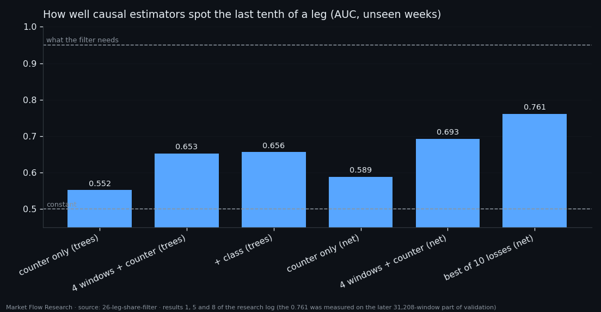
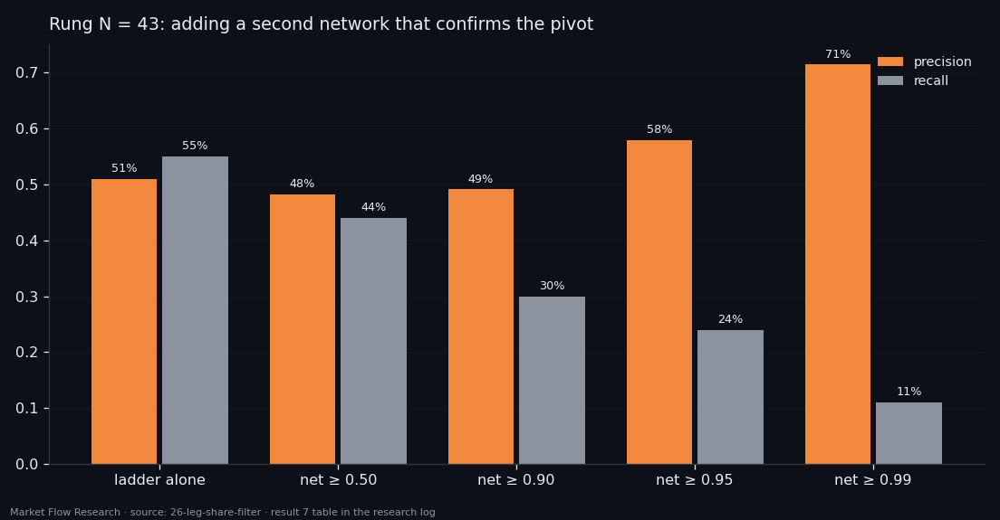

The Filter That Would Lift Precision From 51% to 93% — and Why We Cannot Build It Yet
Half of the reversal-confirmation signals are false, and they share one trait: they point into the middle of a leg. A filter that knows how far along its leg an event really is removes 45 of 49 false signals and not one true one — precision 51% → 92.7%. The catch is that "how far along" is only known in hindsight. Every causal estimator we built — trees, a memory network, ten loss functions, a 24-point grid — reaches an AUC of about 0.69 for "this is the last tenth of the leg", where the filter needs something near 0.95. With that estimate, the filter cuts true signals as fast as false ones.
① The idea works — with the true answer
The confirmation ladder of the last two articles answers "was there a pivot N events ago?" at about 50% precision on unseen weeks — half the signals are wrong. This study asks whether a second signal can cancel the wrong half.
The second signal is simple to state: take the event the ladder points at and say what share of its leg it has travelled, from 0 at the start to 1 at the end. A pivot is the end of a leg, so a signal pointing into the middle of one should be false.
With the true share — known in hindsight from the zigzag — the idea works beautifully. At rung 43 (150 minutes after the pivot, four windows plus class, the threshold from honest training scores) there are 51 true and 49 false signals on the three unseen weeks. Keeping only signals whose event has travelled at least 90% of its leg: 51 true, 4 false — precision 92.7%, recall unchanged. At rung 103, 73.3% becomes 97.1%. The false signals really do sit in the middle of legs.

② The causal estimate cannot see the end of the leg
The estimator gets only causal inputs: a counter of events since the last confirmed pivot, the five context numbers on four windows, and optionally the 62 class numbers. On the unseen weeks, by mean absolute error, no set beats the constant 0.5 (best 0.2534 vs 0.2484): what the trees learned on training weeks does not transfer. They do see the end of a leg a little — AUC 0.653 for "this event is in the last tenth", against 0.552 for the counter alone. The class adds nothing (0.656), as in every study since 23.
A memory network over 2,500 events of history does better — AUC 0.693 with four windows and the counter, and the only estimator to beat the constant on MAE. Ten loss functions (MSE, L1, Huber, rank, edge-weighted, staircase heads, tenths…) all land in 0.739–0.761 on the later part of validation — a spread of 0.022, pure selection noise. Stretching the output to the label's spread made the error worse at the same AUC: under a weak signal, hugging the middle is the correct behaviour. A 24-point grid over memory length, width, depth and learning rate: best 0.6930 against 0.6922 for the untouched control. Every model's best epoch is the first; they overfit from the second.

③ A weak estimate cuts the wrong signals
Used as a filter, the estimated share does the opposite of what was hoped: it cuts true signals faster than false ones. At a threshold of 0.5 the trees' estimate removes 8 false and 5 true signals (51.0% → 52.9%); at 0.9 it keeps 3 of 100 signals and precision falls to 37.5%. Thresholding the network's output needs ranks — its scale is compressed and it almost never says 0.9 — and even then the best result is 52.9% at rung 43 and 76.9% at rung 103: gains of a point or three, paid for with a third of the signals.
One more idea was tested: a second network trained to confirm reversals, used as an extra vote. At rung 103 it only hurts. At rung 43 it helps only at the very end of its scale — a 0.99 threshold gives 71.4%, but that is 10 of 93 reversals, one signal every eight days. The two models look at the same price context and tend to be wrong in the same places: at 0.9 the network cancelled 20 false signals and 23 true ones.
The whole problem has collapsed into a single number: how well the last tenth of a leg can be recognised causally. The ceiling shows what each point of that AUC is worth — tens of percentage points of signal precision. The estimate sits at 0.69; the filter needs about 0.95. The next study attacks exactly this gap with a different definition of the reversal zone.

Reproduce this study
- Research log (.md, Ukrainian): goal, data, plan, scripts, every confirmed stage and table — enough to rerun the study
- Reproduction kit (.zip): the study's scripts, project rules and base scripts that build every class
If this changed how you read the tape, the natural next step is Volume Is the Fuel — Not the Steering Wheel — We recorded the Binance order book every second for six coins over five months and ran eighteen tests on what volume really does.
Volume Is the Fuel — Not the Steering Wheel
We recorded the Binance order book every second for six coins over five months and ran eighteen tests on what volume really does.
About Market Research Lab — What We Collect and Why
Most market commentary is storytelling.
From Calm to Calm: a Standard for What Counts as a Signal (BTC)
We stopped defining market signals with a stopwatch.
The Wall That Goes Quiet: What Resting Liquidity Predicts
We measured resting limit liquidity sitting on both sides of the book second by second across six coins, and asked the only question that matters:….
Comments
Discussion is powered by GitHub. Enable it by adding secrets/giscus.json (repo IDs from giscus.app).